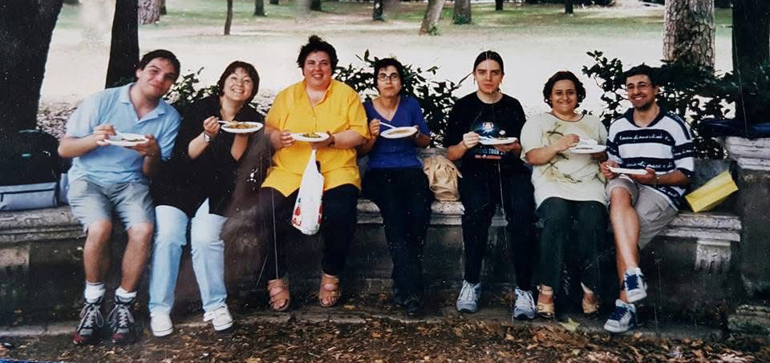

Finalmente, dopo tante e-mail e molte telefonate, eccoci alla Stazione Termini di Roma per il primo incontro dell'equipaggio della USS AFRODITE.
Ci attende una giornata molto impegnativa, iniziata all'insegna della pioggia, ma anche della puntualit : alle ore 10.00, infatti, davanti al McDonald's della Stazione Termini sono presenti tutti i componenti dell'equipaggio tranne il Secondo Ufficiale Medico Robert Van Bajark che annuncia ritardo; il Capo della Sicurezza Rael che ci raggiunger pi tardi; ed il Primo Ufficiale Medico T'Mik, assente giustificato.
Il primo ad arrivare ovviamente il Capitano Giuseppe 'Beppe' Alighieri pronto fin dalle ore 9.20 a fare gli onori di casa con in mano un IST e in bocca la mitica parola d'ordine ("A De Leone gli puzza il fiato"), anche se non risulta poi usata da nessuno degli Ufficiali presenti.
Alla spicciolata, quindi sono arrivati, in ordine di apparizione: il Capo OPS Peter Jacket; il Vice Capo della Sicurezza Christian D'Accardi con moglie al seguito; il Numero Uno Frruuu con fotocopie, fogli per scrivere e penne gentilmente fornite dallo sponsor personale della nostra Horta.
Seguono il Primo Ufficiale Scientifico Fabiola Renzi, con il suo Secondo Da Nee, e l'Ingegnere Capo Jidtzia Ta Nutri.
Alle 11.30 Capitan Beppe ed il suo fido secondo in comando (registrato l'arrivo di Robert Van Bajark), guidano l'equipaggio per le vie romane fino a raggiungere la sede operativa: il McDonald's di Piazza della Repubblica, già sede degli incontri di diversi Cadetti del primo ciclo.
Fino alle ore 14.35 l'equipaggio della AFRODITE ha provveduto a pianificare la missione affidatagli dal Comando Accademico di Flotta, ma soprattutto a conoscersi e ad integrare i vari Dipartimenti tra di loro.
Ovviamente non sono mancati momenti di puro divertimento n di panico completo; vediamone due che, guarda caso, vedono come protagonista la nostra Horta: il primo il momento in cui Frruuu si vista rovesciare il suo cappuccino sul tavolo; il secondo vede l'equipaggio alle prese con un furto; ma andiamo con ordine.
Frruuu, entrata nel locale, trova subito una nicchia (ovviamente!) e ci si piazza; Capitan Beppe le si mette davanti e tutto il resto dell'equipaggio intorno.
Ordinato subito da bere, Frruuu trova il modo di battibeccare qualcosa con il Secondo Ufficiale Medico circa le ordinazioni; ma andiamo avanti. Vanian, la moglie del GM D'Accardi, porta il 'beveraggio' e ci piazziamo pronti ad analizzare le varie soluzioni che Capitan Alighieri ha preparato, quando
"Ma porc [CENSURA SULLE PAROLE DETTE - E NON DETTE - DA FRRUUU]
Si rovescia il cappuccino caldo di Frruuu su tutta la documentazione preparata dal nostro Numero Uno.
Pronta replica di Robert, quasi per vendicarsi dei rimproveri subiti prima dalla Horta:
"Eh, ma io lo sapevo che sarebbe andata a finire cos ?!"
" [ALTRA CENSURA SUL PARLATO, MA MOLTO DI PIU' SUL NON PARLATO, DI FRRUUU] "
Immensa risata da parte dell'equipaggio che - operativo come non mai - attua un trasbordo verso una nicchia vicina in attesa che gli addetti del locale ripristinino l'ambiente deturpato dalla nostra goffaggine.
Asciugata la prima nicchia, finalmente gli Ufficiali della USS AFRODITE possono riprendere le posizioni precedenti, nella prima nicchia.
Sono le 14.45 quando si decide di fare una pausa pranzo. Frruuu si alza e
"La mia borsa ?! sparita la borsa... !!"
Insomma, morale della favola: mentre la USS AFRODITE stava tentando di risolvere gli arcani di De Leone, Stark e company, qualcuno ha alleggerito la nostra Horta dell'ingombrante peso della borsa con annesse chiavi della macchina, patente, documenti, bancomat , tessere e carte di credito varie, ma soprattutto... delle penne sponsorizzate!
Frruuu parte alla carica con Capitan Beppe dietro: c' chi cerca nei bagni, chi nelle altre sale; chi cerca tra le sedie e nelle altre nicchie; chi si informa presso i camerieri e chi cerca di ricostruire gli eventi.
Povera Frruuu!!!
Con dignit e molto sangue freddo va alla ricerca dei Carabinieri, anche perch pare che il nostro Ingegnere Capo (Jidzia Ta Nutri) abbia intravisto dei movimenti sospetti alle spalle di D'Accardi (bella figura, proprio dietro il Vice Capo della Sicurezza complimenti !!).
Passa il tempo il morale dell'equipaggio sotto le scarpe!
Alle 16.00 troviamo i nostri nove eroi - anzi otto: Frruuu era alle prese con la denuncia alla Forza di Pubblica Sicurezza - di nuovo alla Stazione Termini per i saluti di rito, lo scambio di indirizzi elettronici e con Capitan Beppe che deliziava tutti sulle sue avventure accademiche.
Fine registrazione.
S.Ten. Giuseppe Alighieri
Capitano FF
USS Afrodite NCC-1863

Alcuni dei valorosi eroi della USS Afrodite mentre si rifocillano durante uno degli innumerevoli e sfiancanti brainstorming
per affrontare le missioni/(disa)avventure a cui gli Istruttori di StarFleet li sottopongono.